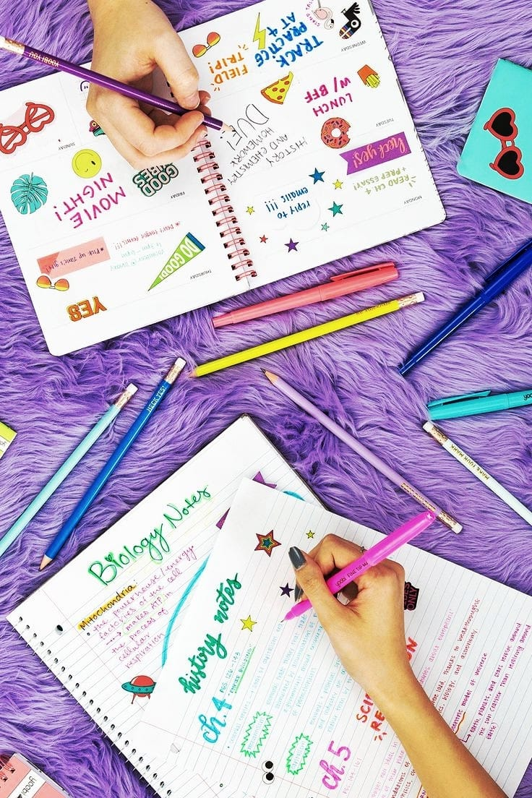

21 Ways to keep up with your Notes
Many of us are in the habit of leaving things for the last moment. Being a student, you must have been a victim in a situation where either you are not able to complete notes or maybe do not have a strategy to study. It is not just about having study material at your table and giving it a read or maybe memorizing it. It is more of a technique that everyone can apply; all it takes is a will to perform. Here are 21 ways to keep up with your notes.
1. Before the Lecture.
You have to make sure that you have printouts of what is being taught in your class. You must
practice all the questions mentioned in your notes. It eases the process of solving problems.
This trick works because our visual and spatial memory is quite strong and it is easier to
recollect things which are familiar to it.
2. During the Lecture.
Organize your notes and clip them together. While you are being taught, stay aware of what your professor emphasizes. Keep a highlighter or a pen with yourself so that you can get important things marked. Also, get your questions answered.
3. After the Lecture.
Always read your notes when you get back home. Prepare summaries and keep them somewhere together and safe. You have got to rewrite your notes by your own hands; you can revise your topics this way.
4. Begin with a Reference
When making notes, always mention the date, page, and name of the chapter you've been making notes from.
5. Slide through your Chapters
Chapters must be sectioned into smaller parts. Go through your chapters thoroughly and make their summary.
7. Concise Sentences
Write shorter sentences, you may even use keywords at times, but don't overuse them, it creates confusion.
8. Highlight what is needed
Not everything needs to be highlighted; you can do this trick for those specific words which can make you remember the whole thing. This is mind-mapping.
9. Use of Symbols
It's simple and really interesting. Making symbols like an exclamation sign can remind you that the topic is really important.
10. Do not Repeat
You don't have to write the same thing twice, make little changes; they can expand your memory.
11. Colour Schemes
If you are using different coloured pens, never use more than three.
12. Mind Mapping
Mind mapping remembers things with the help of either a diagram or a keyword. They are packed with information. All you have to do is remember the little things.
13. Flashcards
Flashcards should only be made as short as possible and especially when you have to conduct a quick revision.
14. Providing Header
Always use a header, not too hard but always attractive enough to keep you indulged.
15. Providing Subheader
It must stand out from the rest of the text, but should not be placed in the centre. Keep it smaller than the header.
16. Respecting Bullets
Bullets are always easier to read and keep your content organized. Only the sentences must be really short.
17. Rough and Quick Diagrams
Make soft diagrams that keep your content clean and you can have a glimpse of them.
18. Practical Tips and Tricks
Create and compare practical applications of what you read, it improves your chances of retaining things.
19. Putting Colons
Important references and short explanations can be put within colons and brackets.
20. Decor with Boxes
The easiest step to contrast important definitions is to make a box or a circle around them. It decorates your notes.
21. Key is the Lifeline
When using abbreviations, always add Key at least explaining all about the abbreviations you've used, this saves your time and makes your study effective. With the help of such well-crafted notes, you will now be able to deal with your burdening studies.
By –
Sameer Hussain
Tags: #corruption, #EvilsOfCorruption, #socialevil, #ECONOMIC EVIL, # POLITICAL EVIL, #notespickup, #notes, #trends
Leave a Suggestion